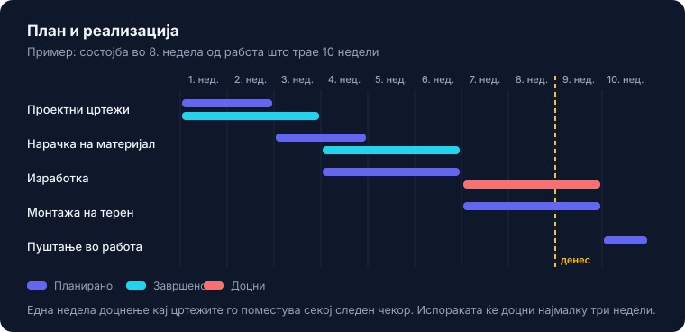
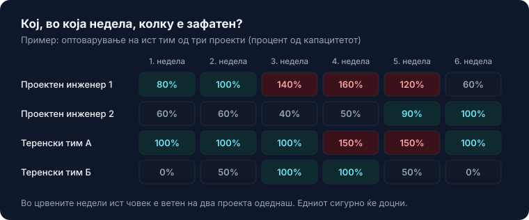

Кога станува потребен софтвер за управување со проекти?
Кај фирмите што работат инженеринг, изведба и монтажа, планот на проектот најчесто се прави еднаш, на почетокот. Во Excel се добива убав гантограм, се покажува на состанок, потоа оди во папка и повеќе не се отвора. Работата сепак оди, затоа што раководителот на проектот сè држи во глава. Кога одеднаш ќе тргнат три-четири работи, овој начин ги исцрпува и човекот и фирмата.

Зошто планот останува во фиока?
Да се одржува ажурен план во Excel е работа сама по себе. Доаѓа вест од теренот, некој ја отвора датотеката, ги поместува датумите и новата верзија ја праќа на сите по е-пошта. По две недели кружат четири различни верзии и никој не знае која е точната. По некое време се откажува и тој што го ажурирал планот.
Оттогаш состојбата на проектот се дознава по телефон. Теренот се прашува „до каде сме“, а одговорот е „утре завршуваме“. Истиот одговор може да доаѓа три недели, затоа што никаде не пишува колку проценти од работата се завршени.
Ова има последица и кај клиентот. Кога треба да се подготви ситуација (фактура за изведени работи), од документи се собира кој колку работа извел, кој материјал стигнал на градилиштето, која дополнителна работа ја одобрил клиентот. Секој документ што недостига значи дека фактурата се одлага за следниот месец.
Како расте мало доцнење?
Во проектот работите зависат една од друга. Кога доцни одобрувањето на цртежите, доцни нарачката на материјал; кога материјалот доаѓа доцна, се поместува изработката; кога се поместува изработката, теренскиот тим чека без работа или го праќаат на друга работа. Една недела поместување на почетокот ве дочекува како три-четири недели при предавањето.

Самиот овој синџир е неизбежен, во секој проект нешто се поместува. Проблемот е што поместувањето се забележува доцна. Ако планот не е ажурен, за доцнењето дознавате две недели пред рокот, а тогаш единственото што можете е да платите прекувремена работа и да побарате продолжување од клиентот.
Ист тим, три проекти
Во фирма со средна големина, како што расте бројот на проекти, вистинскиот притисок е врз луѓето. Истиот инженер црта за три проекти, истиот теренски тим е ветен на две градилишта. Секој проект сам за себе изгледа разумно; кога ќе ги ставите еден до друг, излегува дека во некои недели од еден човек се очекува работа за двајца.

Оваа табела може да се води во Excel, но при секоја промена во проект треба рачно да се пресметува одново. Никој не го прави тоа. Преклопувањето се дознава на денот кога тимот не може да излезе на терен.
Што прави софтверот за управување со проекти?
Во основа, го држи планот жив. Активностите, нивното траење и меѓусебните зависности се внесуваат еднаш. Кога една активност ќе задоцни, датумите на зависните активности сами се поместуваат и новиот рок веднаш се гледа.
Напредокот се внесува од теренот. Шефот на тимот на телефон ја означува работата завршена тој ден, додава фотографија, забележува кој материјал недостига. Човекот во канцеларијата не мора никого да бара за да ја дознае состојбата.
Документите се собираат под проектот: договор, последна верзија на цртежите, преписка со клиентот, одобрени дополнителни работи, записници за примопредавање. Кога ќе дојде време за ситуација, се знае каде да се бара.
На крај, сите проекти стојат еден до друг на еден екран. На прв поглед гледате кој е навреме, кој доцни, кој во која недела е преоптоварен. Кога го има овој екран, на неделниот состанок не се губи време на прашања за состојбата, туку веднаш се зборува што да се прави.
При која големина станува потребен?
За тим од пет луѓе со еден проект доволна е добро водена Excel датотека. Колку што гледаме, престанува да биде доволна во овие случаи:
- Ако истовремено се водат повеќе од три проекти.
- Ако истите луѓе или тимови работат на повеќе проекти.
- Ако единствениот начин да се дознае состојбата на терен е телефонски повик.
- Ако ситуациите доцнат затоа што не можат да се соберат документите.
- Ако не знаете колку проекти лани биле предадени со задоцнување.
На што да се внимава на почеток
Најчеста грешка е уште од првиот ден да се внесува секој детал во системот. Список од триста ставки никој не може да го одржува ажурен. Почнете со петнаесет-дваесет главни активности по проект, а деталите ги зголемувате по потреба.
Второ, внесот од терен мора да биде многу лесен. Не можете да очекувате шефот на тимот секоја вечер да седне пред компјутер. Податок што не може да се внесе со два допира на телефон по некое време воопшто не се внесува.
Трето, почнете од нов проект. Пренесувањето на полузавршена работа во системот е макотрпно и уште на почеток го одбива тимот. Отворете ја следната работа во системот, а старите нека завршат по старо.
Која алатка ќе се користи е одлука што доаѓа потоа. Има готови алатки за управување со проекти, има модули за проекти во ERP системите, има решенија пишувани по мерка за фирмата. Ние прво гледаме како фирмата го води проектот и според тоа предлагаме алатка.
Често поставувани прашања
Имаме план во Excel, зошто не е доволен?
Excel е доволен за да се нацрта планот. Тешко му оди одржувањето на планот ажурен и прегледот на повеќе проекти одеднаш. Додека датотеката стои на компјутерот на еден човек, податоците од теренот не стигнуваат до неа.
Дали теренскиот тим ќе внесува податоци од телефон?
Ќе внесува ако податоците се малку и екранот е едноставен. Според нашето искуство најлесно се прифаќа фотографирање и прикачување, затоа што тимот и онака фотографира и праќа на WhatsApp.
Готова алатка или софтвер по мерка?
Ако вашата работа е блиску до стандарден тек, готовата алатка е побрза и поевтина. Ако треба врска со ситуации, понуди и залихи или начинот на работа ви е специфичен, прилагоден систем трае подолго.
Поврзани услуги: ERP за инженерски и изведувачки фирми, ERP решенија за мали и средни фирми.
Да ги погледнеме заедно вашите проекти
Да разгледаме заедно еден ваш проект што е во тек и да видиме каде запнува.
Да разговараме за вашиот проект